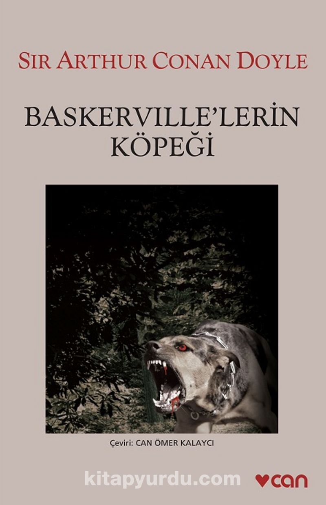
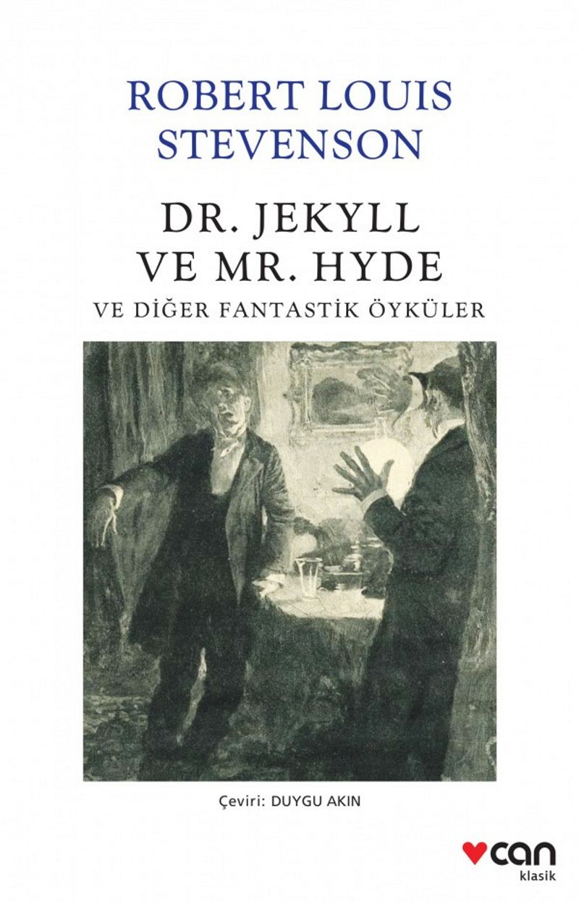
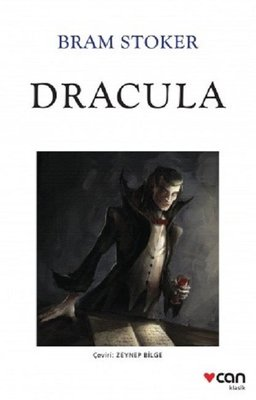
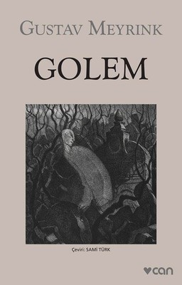
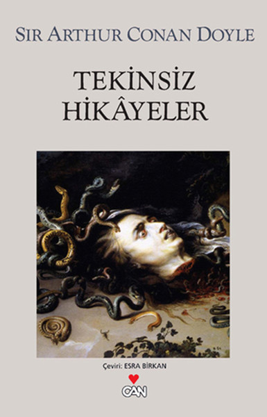

CADILAR BAYRAMI ÖZEL BEŞ KİTAP

1.Baskerville’nin Köpeği
Bugüne kadar yazılmış en büyük suç romanlarından biri olan Baskerville’lerin Köpeği, yine Dr. Watson’ın ağzından Sherlock Holmes’a yeni bir tanım kazandırdı: Dr. Watson ünlü dedektifi, suç mahallini incelerken kullandığı yöntem ve araştırma tekniklerine bakarak, “kokusunu aldığı şeyi buluncaya kadar yılmadan koşup duran, iyi eğitimli, safkan bir av köpeği”ne benzetti.

2.Dr. Jekyll ve Mr. Hyde ve Diğer Fantastik Öyküler
Stevenson’ın öykü kitabı, kişilik bölünmesini işleyen “Dr. Jeykll ve Mr Hyde” dışında, bilime hizmet kisvesi altında, para ve iktidar hırsıyla sınır tanımayan genç cerrahları anlatan “Ceset Hırsızı” ve aşk, gizem ile sömürü motiflerini incelikle bir arada ören “Olalla” öykülerinden oluşuyor

3. Dracula
İngiliz yazar ve akademisyen Sir Malcolm Stanley Bradbury’nin, “şimdiye kadar yazılmış en güçlü korku hikâyelerinden biri” diye tanımladığı Dracula, Kont Dracula ve onunla savaşmayı göze alan bir grup genç arasındaki korku dolu çatışmaları anlatıyor.

4.Golem
Taş kesim ustası Athanasius Pernath gizemli bir ziyaretçinin ardından farklı evrelerde, tuhaf sanrılar arasında hep aynı kişiyi görür. 33 yılda bir Yahudi Mahallesi’nde ortaya çıktığı söylenen efsanevi yaratık Golem’le karşılaşır ve yaşantısı esrarlı olaylarla altüst olur.

5.Tekinsiz Hikâyeler
Kısa öykülerinden oluşan bu derlemede birçok doğaüstü olayla karşılaşabileceğiniz gibi, olaylar gerçek mekânlar sayesinde hikâyelere daha gerçekçi bir anlam katıyor.